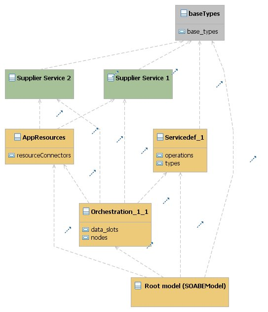

Servicegen - Strutturazione dei vari modelli del servizio
La descrizione di un servizio servicegen è strutturata in differenti modelli ciascuno dei quali descrive
una porzione delle caratteristiche del servizio stesso.
Ciò permette di gestire in modo più efficente e strutturato il modello complessivo, anche in caso
di lavoro in team.
Struttura complessiva dei modelli e delle dipendenze
Nell'immagine seguente è mostrata la struttura delle dipendenze tra i vari sotto-modelli di cui è
composto il modello che descrive un servizio servicegen:

Nel disegno:
- ciascuna classe corrisponde ad un differente file di modello:
- il modello principale(nell'es: [root model]) contiene un istanza di SOABEModel
- il modello delle risorse utilizzate nell'orchestrazione (es: connettori a servizi; nell' es.: [appResources]
- un modello per ciascun servizio definito e esposto dal componente (nell'es: [ServiceDef_1])
- nel caso di servizi di orchestrazione:
- un modello per ciascuna operazione prevista dall'interfaccia e contenente la struttura del flusso di
orchestrazione relativa a quell'operazione (nell'es: [Orchestration_1_1])
- un modello relativo all'interfaccia di servizio di ciascun servizio utilizzato nell'orchestrazione.
ciascuna dipendenza tra due classi corrisponde ad una dipendenza tra due file di modello, che si realizza
in EMF:
- mediante l'inclusione del modello da cui si dipende nel modello che presenta la dipendenza tramite
il comando "load resource..." nell'editor strutturato
- referenziando (dove necessario) un oggetto appartenente al modello incluso in una property di
un oggetto appartenente al modello che include
i modelli rappresentati con il colore giallo sono modelli specifici dell'applicativo, mentre i modelli
rappresentati in grigio sono da considerarsi librerie da includere nel progetto
Alberatura dei file di modello
[[TODO]]